The Nature of Code · Fractals
재귀 위계와 제한된 불규칙성에서 배운다. 완벽한 대칭과 무제한 분기는 피하고, engine.js의 시드·깊이·가지 상한으로 옮겼다.
LATEST / INK & TINT STUDY
꽃머리 아래의 몸체를 다시 구성하고 수묵·담채와 꽃잎 색 선택을 더했습니다. 공식 회화 3점의 실제 이미지와 출처를 먼저 관찰한 뒤 v12를 실행했습니다. 반복 부채꼴 잎과 중앙 과밀을 보고 v13에서 종별 잎·구도를, 옅은 연결과 균일한 면을 보고 v14에서 먹의 농담·재료별 구조선을 고쳤습니다. 각 단계의 원본 PNG와 소스 태그를 보존합니다.
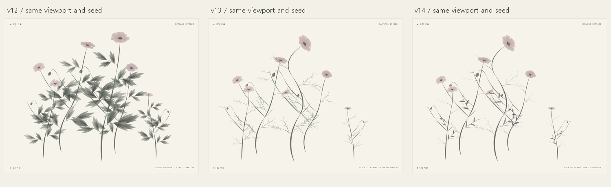
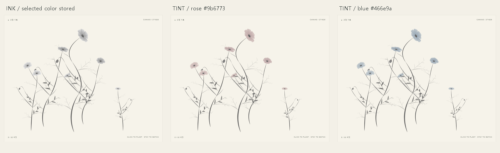
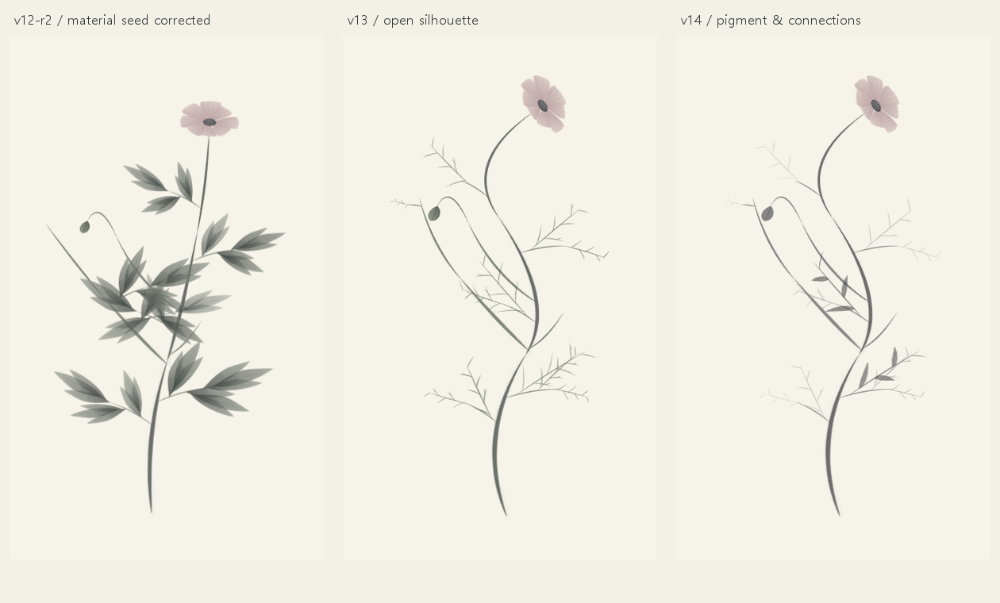
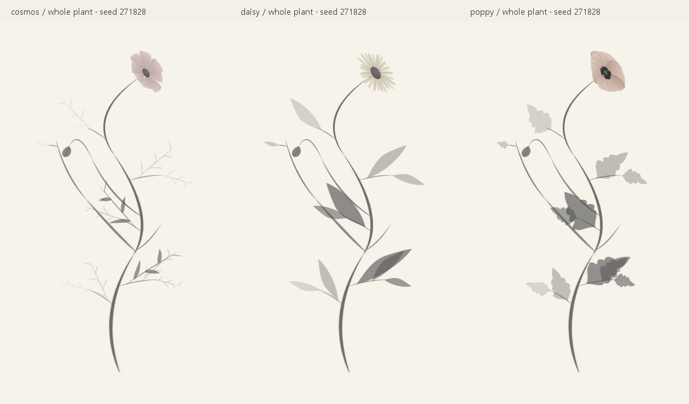
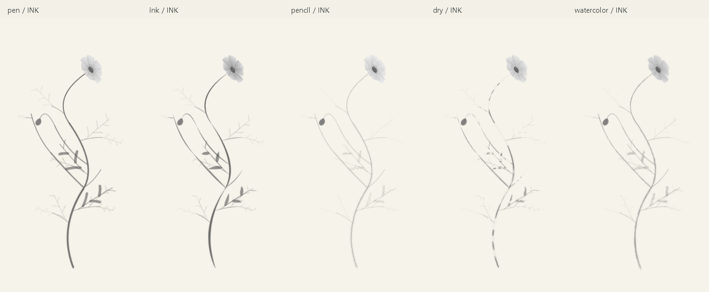
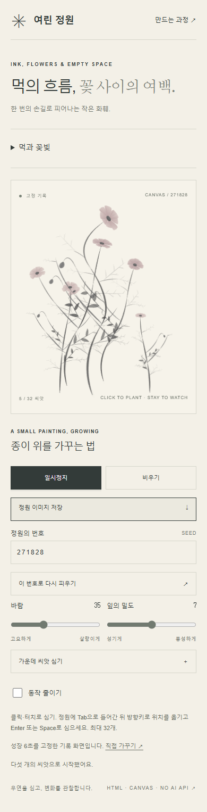
제작자와 독립 AI 리뷰는 연결 I1·구도 I2·색 범위 I4를 채택했습니다. 먹과 종이 I3은 부분 채택입니다. 넓은 잎의 평평한 벡터 면과 제한된 실제 먹 번짐은 남습니다. 성장 중 잎자루가 닿기 전 잎이 나타나던 문제는 v14에서 수정했습니다. 기하·실제 타이밍 함수5/5·Node23/23·기능127/127·접근17/17·전체 식물/근접52/52·페이지132/132를 확인했습니다. 최대 장면 관찰에서 캐시를 다시 만드는 선택 변경은 약0.97초까지 걸렸습니다. 출처/이력 감사·원격 전달은 실제 후속 결과로 확인합니다.
근거와 승인 v12 d63b83b · v13 6dfb850 · v14 ff638fa. 비교 패널은 자체 캡처를 축소한 편집 도판이며 원본을 따로 보존합니다. 외부 회화 픽셀은 포함하지 않습니다. 기술 통과·AI 시각 판정·공개 업로드는 사람의 취향 승인과 별개입니다. 사용자 직접 미적 승인 확인 대기.
EARLIER / PETAL BRUSH STUDY
줄기에 머물던 다섯 브러시의 차이를 꽃잎의 외곽과 내부로 확장했습니다. v5 → v6 → v7 → v8 → v9 → v10 → v11의 실제 반복을 거쳐 붓결·겹침·밝은 여백을 조정했습니다. v11에서는 드라이 획의 화면 픽셀 폭을 보정했습니다. 확대·기본 크기·실제 정원 도판은 실행 상태를 기록하며, 재료 충실도에 대한 시각 판단은 별도 기록에서 확인합니다.
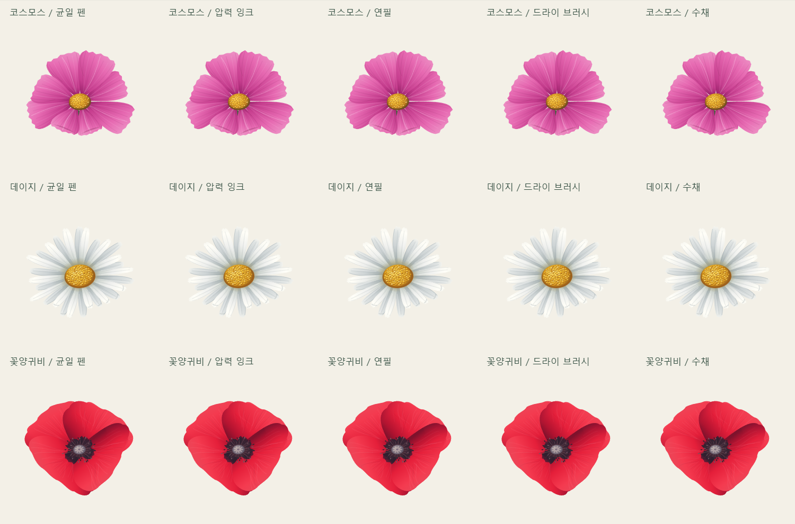
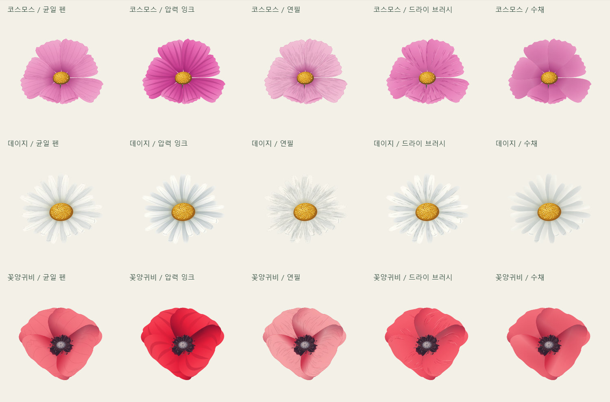
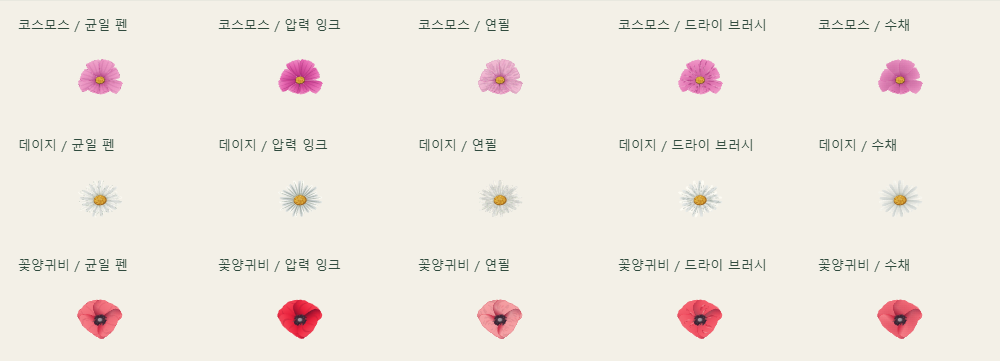
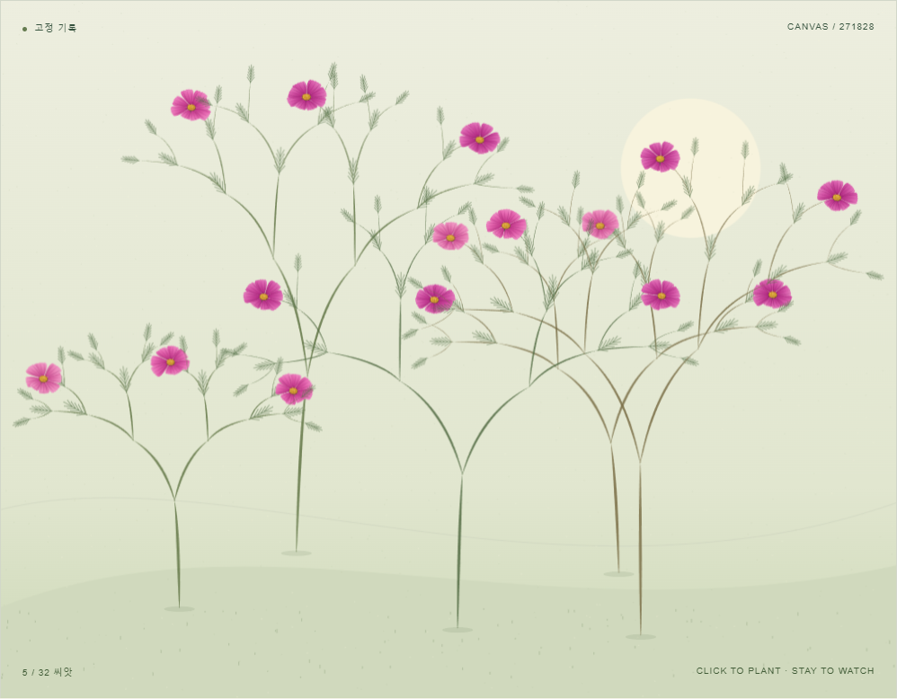
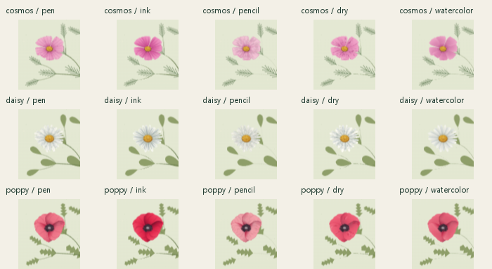
꽃머리 비교 조건 seed 271828 · 두께 1 · 질감 60 · 농도 85 · 꽃잎 표현 65 · 확대 반지름 105px / 기본 23px
비교 도판은 프로젝트 코드가 새로 그린 출력이며 외부 회화·사진을 복제하지 않았습니다. v11 실행 도판, 기술 시험, 시각 판정을 구분해 기록합니다. 독립 AI 시각 리뷰에서 수채의 재료 충실도(P3)는 부분 충족으로 남았습니다. 사용자 미적 승인 확인 대기.
EXTENSION / FLOWERS & MARKS
꽃 3종과 브러시 5종을 독립 선택합니다. 실물·공식 샘플 관찰 → v3 최초 확장 → v4 꽃·잎 수정 → v5 브러시 수정의 실제 전후를 기록합니다.
탐색 가능한 레퍼런스 보드 ↗ · 15개 조합 관찰실 ↗ · 확장 작업 로그 ↗

A GARDEN, THROUGH ITERATION
심고, 바라보고, 다시 고칩니다.
하나의 Canvas 작품을 만드는 여덟 단계.
기준을 먼저 세우고, 실제 화면과 실행 기록으로
개선의 과정을 남깁니다.
01 / OBSERVE THE CHANGE
02 / THE WORKING METHOD
03 / IDEAS WE LEARNED FROM
재귀 위계와 제한된 불규칙성에서 배운다. 완벽한 대칭과 무제한 분기는 피하고, engine.js의 시드·깊이·가지 상한으로 옮겼다.
표시 크기와 그리기 크기를 구분한다. 늘어난 그림과 그림 속에만 있는 안내를 피하며, 초기화·리사이즈와 HTML 설명에 적용한다.
시간 기반 진행과 단일 요청 관리에서 배운다. 중첩 루프와 정지 뒤 요청을 피하는 방향으로 성장·재생 루프를 개선한다.
사용자 설정과 정적 결과를 존중한다. CSS만으로 Canvas도 멈췄다고 가정하지 않고, JavaScript 루프와 완성 장면에 확장 적용한다.
타인의 코드·이미지·페이지 구성을 가져오지 않았다. 출처는 원리의 근거이며, 이 정원의 동작을 검증한 증거는 아니다. 배울 특징·피할 특징·적용 위치 전체 보기 ↗